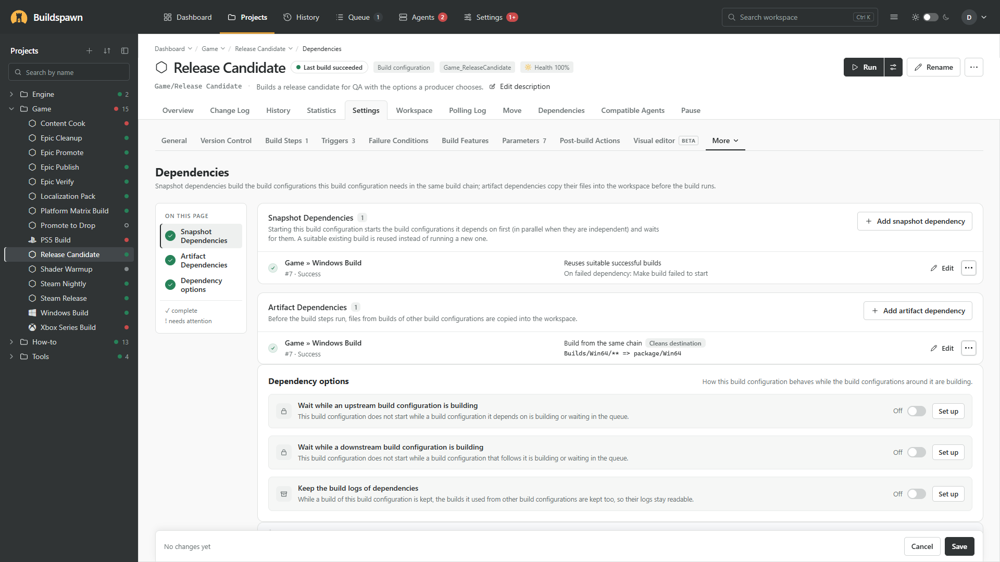

Dependencies
What a build waits for, which files it takes from other builds, and how it behaves while the builds around it are running.
When to use it
Use it to build a chain: the game build needs the engine build first and takes its files. A suitable earlier build is reused, so a chain does not rebuild what did not change. Dependencies is under More on the Settings tabs.

How to set it up
- Open the build configuration and click Settings. Then click More › Dependencies.
- Under Snapshot Dependencies click Add snapshot dependency. Choose the build configuration this one needs.
- Choose the options and what happens when the dependency fails.
- Under Artifact Dependencies click Add artifact dependency to copy files from another build.
- Click Save.
Every field
Snapshot dependency
| Field | What it does | Default | Example |
|---|---|---|---|
| Dependency | The build configuration to run first. | None | Engine/Linux Server Build |
| Do not run new build if there is a suitable one | Reuse a suitable existing build instead of starting a new one. | On | On |
| Only use successful builds from suitable ones | Failed builds are never reused, even if they are otherwise suitable. | On | On |
| On failed dependency | What this build does when the dependency fails: Run build, but add problem, Run build, but do not add problem, Make build failed to start or Cancel build. | Run build, but add problem | Cancel build |
Artifact dependency
| Field | What it does | Default | Example |
|---|---|---|---|
| Get artifacts from | Which build to take files from: Build from the same chain (needs a snapshot dependency on the same build configuration), Last successful build, Last pinned build, Last finished build or Build number. | Build from the same chain | Last successful build |
| Artifact rules | One rule per line: a path or pattern in the build's artifacts, optionally => a folder in the workspace. Lines that start with -: exclude files. | Empty | dist/**/*.zip => packages |
| Clean destination paths before downloading artifacts | Delete the contents of each target folder before copying. Never the workspace root. | Off | On |
Dependency options
| Field | What it does | Default | Example |
|---|---|---|---|
| Wait while an upstream build configuration is building | This build configuration does not start while a build configuration it depends on is building or waiting in the queue. | Off | On |
| Wait while a downstream build configuration is building | This one does not start while a build configuration that follows it is building or waiting. | Off | Off |
| Keep the build logs of dependencies | While a build of this build configuration is kept, the builds it used from other build configurations are kept too. | Off | On |
When is a build suitable?
- It succeeded (when the dependency only uses successful builds) and was started after the dependency's configuration was last saved.
- It used the same parameter values the chain asks for.
- It is the dependency's newest build: no newer build is running or queued.
- The builds of its own snapshot dependencies are reused too.
Run on the build configuration can rebuild failed and incomplete dependencies, or all of them, whatever these options say.
A worked example
Windows Build has a snapshot dependency on Engine/Linux Server Build and an artifact dependency that copies dist/**/*.zip => packages. When you run the game build, the engine build runs first if there is no suitable one.
What you see when it runs
A chain shows the builds as a graph on the Build Chains tab. The log says which builds were reused. A build started this way says Started as a snapshot dependency of Windows Build.
Problems and fixes
| Problem | What to do |
|---|---|
| The dependency is rebuilt every time | Its parameters differ from the chain's, or a newer build is queued. See the list of what makes a build suitable. |
| An artifact rule fails | Enter at least one rule. A target path must be inside the workspace and must not contain ... |